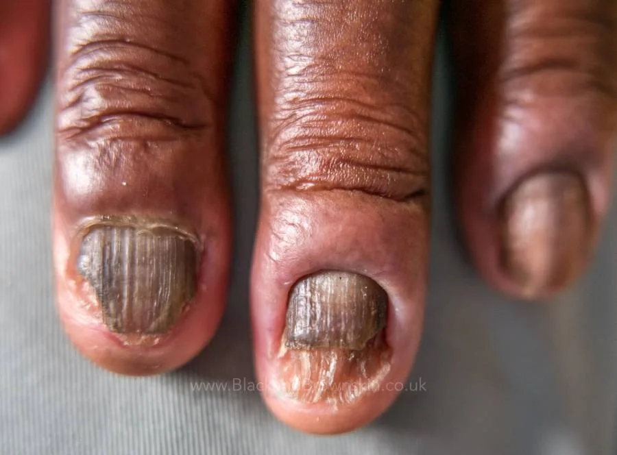
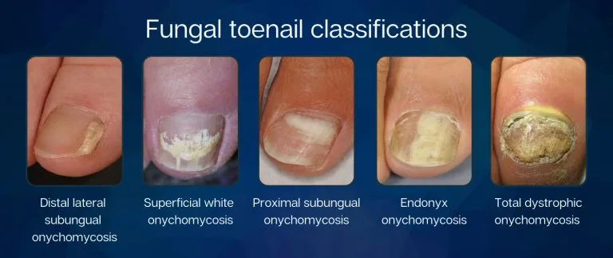
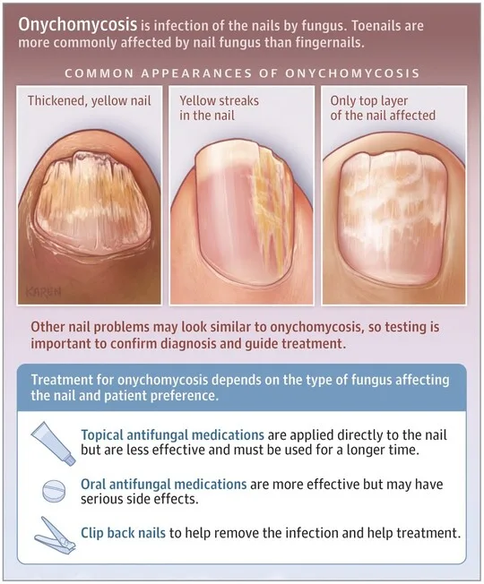
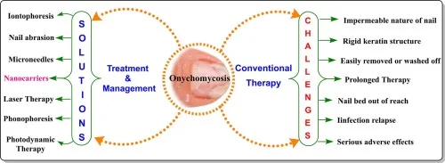

Expanded Nursing Uganda Explanation
Onychomycosis should be understood beyond a short definition. Link the concept to patient history, focused assessment, common risks, nursing priorities, documentation and evaluation of outcomes.
01 Overview
Onychomycosis is a common infectious disease affecting the nail unit, specifically a fungal infection of the nail plate, nail bed, or both. The term "onychomycosis" is derived from Greek: onyx (nail) and mykes (fungus).
It is a persistent and often progressive condition that, if left untreated, can lead to significant nail destruction, pain, and functional impairment.
- Causative Organisms: Dermatophytes (most common): These fungi are keratinophilic, meaning they thrive on keratin, the main protein component of skin, hair, and nails. Trichophyton rubrum is the most frequent cause (accounting for 70-90% of cases, especially in toenails).
- Trichophyton mentagrophytes is another common dermatophyte involved.
- Epidermophyton floccosum can also be a cause.
- Yeasts: Primarily Candida species (e.g., Candida albicans ), which are more commonly found in fingernail infections, often associated with chronic paronychia (inflammation of the nail fold) and frequent water exposure.
- Non-dermatophyte Molds: Less common but increasingly recognized, these include species like Scopulariopsis brevicaulis , Aspergillus species, and Fusarium species. They typically require a pre-existing nail injury or disease to invade.
- Affected Structures: Onychomycosis can involve any part of the nail unit: Nail Plate: The hard, visible part of the nail.
- Nail Bed: The tissue beneath the nail plate.
- Nail Matrix: The area at the base of the nail where nail growth originates.
- Nail Folds: The skin surrounding the nail plate (less direct involvement, but can be a route of entry or associated with paronychia).
- Nature of Infection: Chronic: Onychomycosis is typically a slow-growing, chronic infection.
- Progressive: Without treatment, the infection tends to worsen, affecting more of the nail and potentially spreading to other nails.
- Contagious: While not highly contagious, it can spread between individuals (e.g., in shared communal areas) or to other nails on the same person.
Onychomycosis is a highly prevalent condition, particularly affecting adults, and its incidence is influenced by a combination of demographic, environmental, and host-specific factors.
- High Prevalence: Onychomycosis is the most common nail disorder, accounting for approximately 50% of all nail pathologies. Global Impact: It affects millions worldwide, with estimates of prevalence ranging from 2-18% in the general population.
- Age: Prevalence increases significantly with age. Rare in Children: Uncommon in prepubertal children.
- Increasing with Age: Affects about 5% of young adults, rising to 15-20% in individuals over 40-60 years old, and up to 50% in the elderly (over 70 years). This is attributed to reduced peripheral circulation, slower nail growth, increased exposure, and higher rates of predisposing conditions.
- Location: Toenails (much more common): Accounts for over 80% of all onychomycosis cases. The enclosed, warm, and moist environment of shoes, slower growth rate of toenails, and trauma contribute to this predominance.
- Fingernails: Less common, but can occur, especially in individuals with frequent hand immersion in water or trauma.
- Geographic Distribution: Found worldwide, with variations in prevalence due to climate (more common in warm, humid climates) and cultural practices (e.g., shoe-wearing habits).
- Sex: While some studies suggest a slightly higher prevalence in males, others find no significant difference, or a slight increase in females due to fashion footwear.
Risk factors for onychomycosis can be broadly categorized into host-related, environmental, and trauma-related factors.
- Aging: As discussed, the elderly are particularly susceptible due to slower nail growth, reduced immune function, and higher incidence of comorbidities.
- Genetics: A predisposition to fungal infections may be inherited in some individuals.
- Immunosuppression: Diabetes Mellitus: Poorly controlled diabetes is a significant risk factor due to impaired circulation, peripheral neuropathy, and compromised immune response. Diabetics are at higher risk of secondary bacterial infections and more severe outcomes.
- HIV/AIDS: Weakened immune systems make individuals more vulnerable to opportunistic fungal infections.
- Organ Transplant Recipients: Patients on immunosuppressant medications.
- Other Immunosuppressive Conditions/Medications: Malignancies, systemic corticosteroids, etc.
- Peripheral Vascular Disease (PVD) / Poor Circulation: Reduced blood flow to the extremities compromises the nail's ability to resist infection and heal.
- Psoriasis: Individuals with nail psoriasis are more prone to developing onychomycosis, as the damaged nail provides an easier entry point for fungi. It can also be difficult to distinguish between the two conditions.
- Hyperhidrosis: Excessive sweating of the feet creates a moist environment conducive to fungal growth.
- Tinea Pedis (Athlete's Foot): A pre-existing fungal infection of the skin of the feet (interdigital or plantar) is the most common source for onychomycosis. The fungus spreads from the skin to the nail.
- Warm, Humid Climates: Fungi thrive in such conditions.
- Occlusive Footwear: Wearing tight, non-breathable shoes for prolonged periods creates a warm, moist environment conducive to fungal growth.
- Communal Areas: Frequent use of public showers, locker rooms, swimming pools, and gyms (where fungi can easily spread) increases exposure.
- Shared Contaminated Items: Sharing nail clippers, files, or towels.
- Occupational Exposure: Jobs requiring prolonged shoe wearing (e.g., military personnel, construction workers) or frequent hand immersion in water (e.g., healthcare workers, hairdressers) can increase risk.
- Repetitive Nail Trauma: Minor, repetitive trauma to the nails (e.g., ill-fitting shoes, sports activities) can create microscopic breaks in the nail unit, allowing fungi to invade.
- Direct Nail Injury: A single, significant injury to the nail.
- Poor Nail Hygiene: Infrequent cleaning or improper trimming of nails.
Onychomycosis is classified into several clinical subtypes based on the pattern of fungal invasion into the nail unit. Understanding these subtypes is important for diagnosis, treatment planning, and prognostic considerations. The most widely accepted classification system is based on the route of fungal entry and the location of the infection.
- Distal and Lateral Subungual Onychomycosis (DLSO): Most Common Form: Accounts for 80-90% of all onychomycosis cases.
- Invasion Route: Fungi (usually dermatophytes like T. rubrum ) invade the nail plate from the hyponychium (the skin under the free edge of the nail) and the lateral nail folds. They then grow proximally beneath the nail plate in the nail bed.
- Clinical Features: Begins with discoloration (yellowish, brownish, or whitish streaks) at the distal (free edge) and lateral (sides) aspects of the nail.
- Subungual Hyperkeratosis: Accumulation of keratinous debris under the nail plate, causing the nail to lift (onycholysis).
- Onycholysis: Separation of the nail plate from the nail bed.
- Nail plate becomes thickened, brittle, and crumbly.
- Often associated with tinea pedis (athlete's foot).
- White Superficial Onychomycosis (WSO): Less Common: Accounts for about 10% of cases.
- Invasion Route: Fungi (often T. mentagrophytes ) directly invade the superficial layers of the dorsal (upper) nail plate.
- Clinical Features: Characterized by well-demarcated, opaque, white, chalky patches or spots on the surface of the nail plate.
- The nail plate is soft, powdery, and easily scraped away at the affected areas.
- Does not typically involve the nail bed initially, and there is usually no subungual hyperkeratosis or onycholysis.
- More amenable to topical treatment due to superficial involvement.
- Proximal Subungual Onychomycosis (PSO): Rarest Form: Accounts for less than 1% of cases in immunocompetent individuals.
- Invasion Route: Fungi (often T. rubrum ) invade from the proximal nail fold, through the cuticle, and into the nail matrix and then the proximal nail bed, growing distally towards the free edge.
- Clinical Features: Opaque, white, or yellowish discoloration appears at the proximal end of the nail, near the cuticle.
- The nail plate often separates from the nail bed proximally.
- Significance: This form is highly suggestive of immunodeficiency , particularly common in patients with HIV/AIDS, or those who are otherwise immunosuppressed.
- Endonyx Onychomycosis (EO): Relatively Uncommon:
- Invasion Route: Fungi (often T. rubrum or T. soudanense ) invade directly into the nail plate itself, without involving the nail bed or causing subungual hyperkeratosis.
- Clinical Features: Appears as milky white discoloration of the nail plate, often laminating.
- The nail plate becomes soft and opaque, resembling WSO, but without the chalky surface and often affecting deeper layers.
- No subungual hyperkeratosis or onycholysis.
- Total Dystrophic Onychomycosis (TDO): End Stage: This is the most severe and advanced form, representing the end stage of any of the other subtypes if left untreated.
- Clinical Features: The entire nail plate is completely destroyed, thickened, crumbling, discolored, and often separated from the nail bed. There is significant subungual hyperkeratosis.
- Candidal Onychomycosis: Causative Agent: Caused by Candida species (yeast).
- Clinical Features: Often associated with chronic paronychia (inflammation and swelling of the nail folds), which can precede the nail infection.
- Nail plate typically becomes thickened, discolored (yellow, brown, or green), and can separate from the nail bed.
- More common in fingernails, especially in individuals with frequent hand immersion in water (e.g., housekeepers, bartenders) or those with impaired immunity.
It is possible for a patient to have more than one subtype simultaneously, or for one subtype to evolve into another over time. For example, DLSO can progress to TDO.
Identifying the specific subtype helps guide treatment, as some forms (like WSO) may respond better to topical therapies, while others (like PSO or TDO) almost always require systemic treatment.
The clinical manifestations of onychomycosis can vary depending on the specific subtype, the causative organism, and the duration of the infection. However, a set of common signs and symptoms helps identify the condition.
- Discoloration (Chromonychia): Yellow or Brown: Most common colors, often seen in DLSO.
- White: Characteristic of White Superficial Onychomycosis (WSO) or early Proximal Subungual Onychomycosis (PSO), or Endonyx Onychomycosis.
- Green or Black: Can be due to secondary bacterial infection (e.g., Pseudomonas aeruginosa ) or certain molds.
- Opaque/Cloudy: The nail loses its healthy translucency.
- Thickening (Onychauxis): The nail plate often becomes significantly thicker and harder due to hyperkeratosis (excessive keratin production) in the nail bed, which is a common feature of DLSO and TDO.
- This can make the nails difficult to trim and can cause pressure or pain when wearing shoes.
- Brittleness and Crumbly Texture: The infected nail becomes fragile, easily breaking or crumbling, especially at the edges.
- Pieces of the nail can flake off.
- Deformity and Distortion: The nail may become misshapen, twisted, or lifted from the nail bed.
- Loss of the normal convex curvature, sometimes resulting in a "ram's horn" appearance (onychogryphosis) in severe, long-standing cases.
- Subungual Hyperkeratosis: Accumulation of keratinaceous debris and fungal elements beneath the nail plate.
- This causes the nail plate to lift and become elevated from the nail bed, contributing to thickness and discoloration. It is a hallmark of DLSO.
- Onycholysis: Separation of the nail plate from the nail bed. This often starts distally or laterally and progresses proximally.
- The detached area may appear white or yellow.
- Creates a space where debris, dirt, and moisture can accumulate, potentially worsening the infection or allowing secondary infections.
- Loss of Luster (Dullness): Healthy nails are typically smooth and shiny. Infected nails often lose their natural sheen and appear dull or opaque.
- "Moth-Eaten" Appearance: In some cases, particularly with WSO or extensive TDO, parts of the nail may appear eroded or pitted.
While often asymptomatic in the early stages, as the disease progresses, patients may experience:
- Pain or Discomfort: Especially when wearing shoes, walking, or engaging in activities that put pressure on the affected nail.
- Pain can be due to pressure from the thickened nail, inflammation of the nail bed, or secondary bacterial infection.
- Difficulty with Ambulation: Severe thickening and pain can make walking uncomfortable or difficult, especially if multiple toenails are affected.
- Difficulty Trimming Nails: The hardness and thickness of the infected nails can make self-care challenging.
- Odor: A foul odor can sometimes be present, often due to accumulated debris, secondary bacterial infection, or the fungal metabolites themselves.
- Psychosocial Impact: Embarrassment, self-consciousness, and reduced quality of life due to the unsightly appearance of the nails, especially if fingernails are involved.
- Reluctance to wear open-toed shoes or engage in activities that expose the feet.
While the clinical appearance of onychomycosis can be highly suggestive, a definitive diagnosis requires laboratory confirmation.
- Mimics: Conditions like nail psoriasis, lichen planus, bacterial infections, trauma, benign or malignant tumors of the nail unit, and even normal aging changes can present with similar clinical features (e.g., thickening, discoloration, onycholysis).
- Treatment Efficacy: Antifungal treatments are often long, expensive, and can have side effects. Administering them without confirmation of a fungal infection is inappropriate.
- Identification of Organism: Identifying the specific fungal pathogen can sometimes guide treatment choice, especially if non-dermatophyte molds or Candida are suspected.
Proper specimen collection is paramount for accurate laboratory results. The sample should be taken from the most actively infected part of the nail.
- Preparation: Clean the nail surface with 70% alcohol to remove contaminants.
- Sampling Location: DLSO: Scrape subungual debris from the most proximal area of involvement (underneath the lifted nail plate), as this is where the fungus is most active and least likely to be dead or contaminated. If subungual hyperkeratosis is minimal, a nail clipping that includes the free edge and extends proximally to the affected area is best.
- WSO: Scrape the white, powdery material from the surface of the nail plate.
- PSO: Obtain a clipping from the proximal nail plate or perform a punch biopsy of the nail matrix.
- Candida Onychomycosis: May involve scraping under the nail or from the nail plate, often in conjunction with a swab or scrape from the inflamed nail fold (paronychia).
- Quantity: Collect a sufficient amount of material to ensure adequate fungal elements are present.
- Potassium Hydroxide (KOH) Microscopy (Initial and Most Common): Procedure: Nail scrapings or clippings are placed on a slide with a drop of 10-20% KOH solution, which dissolves keratin and cellular debris, making fungal elements (hyphae, spores) visible. Gentle heating can accelerate the process.
- Results: Observed under a microscope. The presence of septate hyphae (for dermatophytes) or pseudohyphae/budding yeasts (for Candida ) indicates a fungal infection.
- Advantages: Quick, inexpensive, and can be performed in-office.
- Limitations: Does not identify the specific species of fungus.
- Can have false negatives (e.g., if fungal load is low, poor specimen collection, or if non-dermatophyte molds are present but not recognized).
- Requires trained personnel to interpret.
- Fungal Culture (Gold Standard for Species Identification): Procedure: The collected specimen is inoculated onto selective fungal media (e.g., Sabouraud Dextrose Agar with antibiotics to inhibit bacterial growth).
- Results: Cultures are incubated for several weeks (typically 2-4 weeks, but can be longer for slow growers) and then examined for characteristic fungal colony morphology. Microscopic examination of the colonies helps identify the species.
- Advantages: Identifies the specific causative organism, which can be crucial for guiding treatment, especially if non-dermatophyte molds are involved (as they often require different antifungals than dermatophytes). Confirms viability of the fungus.
- Limitations: Time-consuming (takes weeks).
- Can have false negatives (e.g., prior antifungal use, poor sample, overgrowth by contaminants).
- Contaminants can grow, making interpretation difficult.
- Histopathology (Nail Biopsy): Procedure: A small piece of the nail plate, nail bed, or nail matrix (biopsy) is taken and sent for histological examination. Special stains, such as Periodic Acid-Schiff (PAS) stain, are used to highlight fungal elements.
- Advantages: Considered highly sensitive (often more sensitive than KOH or culture, especially for difficult-to-diagnose cases or when previous tests are negative).
- Can differentiate onychomycosis from other nail pathologies (e.g., psoriasis) and detect non-viable fungal elements.
- Can detect fungi even after antifungal treatment has started.
- Limitations: Invasive procedure, requires local anesthesia, can cause discomfort or scarring.
- PCR (Polymerase Chain Reaction) Testing: Procedure: Molecular technique that detects fungal DNA in the nail sample.
- Advantages: Highly sensitive and specific.
- Faster results than culture (days vs. weeks).
- Can detect fungal DNA even if the fungus is non-viable or in very low numbers.
- Limitations: More expensive and not as widely available as KOH or culture.
- Can detect non-viable fungi, meaning a positive result might not always indicate an active infection requiring treatment.
- Perform at least two diagnostic tests: Often, a KOH prep is done first, and if positive, culture is often recommended for species identification, or a nail biopsy if initial tests are negative but suspicion remains high.
- Stop Antifungals Before Testing: If possible, discontinue any topical or oral antifungal medications for several weeks (topicals for 1-2 weeks, oral for 4 weeks) before collecting samples to avoid false negatives.
- Consider Differential Diagnoses: Always keep other nail conditions in mind, especially if lab tests are repeatedly negative.
The treatment of onychomycosis is often challenging due to the slow growth rate of nails, the protective barrier of the nail plate, and the potential for recurrence. Treatment aims to eradicate the fungal infection, restore healthy nail appearance, and prevent reinfection.
These are generally adjunctive to pharmacological treatment or may be considered for very mild cases, or when systemic therapy is contraindicated.
- Nail Debridement: Mechanical Reduction: Regular trimming, filing, or grinding down of the thickened, dystrophic nail tissue can reduce fungal load, improve the penetration of topical agents, and alleviate pressure and pain. This can be done by the patient or a podiatrist.
- Chemical Reduction (e.g., Urea paste): High concentration urea paste can soften the nail plate, allowing for easier removal of affected portions.
- Good Foot and Nail Hygiene: Keep feet clean and dry, especially after showering or swimming.
- Wear clean, dry socks (preferably cotton or moisture-wicking material) and change them daily, or more often if they become damp.
- Wear breathable footwear and avoid tight, occlusive shoes.
- Avoid walking barefoot in communal areas (showers, locker rooms, pools).
- Disinfect shoes regularly with antifungal sprays or powders.
- Do not share nail clippers, files, or other nail care tools.
- Ensure professional pedicures adhere to strict sterilization protocols.
- Topical Antifungal Agents (for mild to moderate cases, or as adjunctive therapy): Mechanism: These penetrate the nail plate to reach the infection. Their efficacy is limited by nail plate penetration, so they are generally best for superficial infections (e.g., WSO) or early/mild DLSO involving less than 50% of the nail plate and not involving the matrix.
- Examples: Ciclopirox 8% topical solution: Applied daily, often for 48 weeks or longer. Requires removal of previous layers with alcohol every week.
- Amorolfine 5% nail lacquer: Applied once or twice weekly, typically for 6-12 months.
- Efinaconazole 10% topical solution: Applied daily for 48 weeks. Shown to have better nail plate penetration than older topical agents.
- Tavaborole 5% topical solution: Applied daily for 48 weeks. Also demonstrates good nail penetration.
- Limitations: Long treatment duration, low cure rates for severe infections, potential for poor patient adherence.
Oral antifungal medications are considered the most effective treatment for moderate to severe onychomycosis, especially when multiple nails are involved, the nail matrix is affected, or topical treatments have failed.
- Terbinafine: Dosage: 250 mg once daily.
- Duration: Typically 6 weeks for fingernails and 12 weeks for toenails.
- Mechanism: Highly fungicidal against dermatophytes. It accumulates in the nail plate for several months after stopping treatment, providing a sustained antifungal effect.
- Cure Rates: High, generally 70-80% mycological cure (eradication of fungus) and 50-70% clinical cure (clearance of symptoms) for toenails.
- Side Effects: Generally well-tolerated. Potential side effects include gastrointestinal upset, headache, rash. Rarely, hepatotoxicity (liver damage) can occur, requiring baseline and periodic liver enzyme monitoring. Drug interactions are possible.
- Itraconazole (Pulse Therapy): Dosage: 200 mg twice daily for 1 week per month (pulse therapy).
- Duration: 2 pulses for fingernails, 3-4 pulses for toenails.
- Mechanism: Broad-spectrum antifungal, effective against dermatophytes, yeasts ( Candida ), and some molds. Also accumulates in the nail plate.
- Cure Rates: Similar to terbinafine.
- Side Effects: Gastrointestinal upset, headache, rash. More significant drug interactions than terbinafine, and potential for hepatotoxicity and congestive heart failure (rarely). Liver enzyme monitoring is required.
- Fluconazole: Dosage: 150-400 mg once weekly.
- Duration: Varies widely, from 6-12 months or longer, depending on response.
- Mechanism: Fungistatic against dermatophytes, fungicidal against Candida .
- Cure Rates: Lower than terbinafine and itraconazole for dermatophyte onychomycosis, but a good option for candidal onychomycosis or if other oral agents are contraindicated.
- Side Effects: Gastrointestinal upset, headache, rash, potential for hepatotoxicity. Fewer drug interactions than itraconazole.
- Laser Therapy: Mechanism: Uses various laser wavelengths to heat and destroy fungal elements within the nail.
- Efficacy: Emerging evidence, but generally considered less effective than oral antifungals and not routinely covered by insurance. Often requires multiple sessions.
- Advantages: Non-invasive, no systemic side effects.
- Photodynamic Therapy: Mechanism: Involves applying a photosensitizing agent to the nail, followed by exposure to a specific light wavelength, which generates reactive oxygen species that kill fungal cells.
- Efficacy: Still largely investigational for onychomycosis.
- Surgical Nail Avulsion (Removal): Partial or Total: Can be done mechanically or chemically (e.g., with high-concentration urea).
- Indications: Severely deformed nails, painful nails, treatment failures, or as an adjunct to topical or oral therapy to reduce fungal load and improve penetration.
- Limitations: Invasive, painful, and does not address the underlying fungal infection alone.
- Combination Therapy: Often, a combination of oral and topical agents, along with nail debridement, provides the best results, especially for severe cases.
- Duration of Treatment: Long treatment durations are common due to the slow growth of nails. Treatment must continue until a completely healthy nail has grown out.
- Recurrence: Onychomycosis has a high recurrence rate (up to 50%), often due to reinfection from untreated tinea pedis, environmental exposure, or incomplete eradication.
- Patient Education: Crucial for adherence, managing expectations, and preventing recurrence.
- Monitoring: Regular monitoring for efficacy and side effects (especially liver function tests for oral antifungals) is essential.
- Special Populations: Diabetics: Requires careful management to prevent complications like cellulitis or ulceration. Oral antifungals may need adjustment due to comorbidities and polypharmacy.
- Immunocompromised: May require longer or more aggressive treatment.
Nurses play a role in assessing, planning, implementing, and evaluating care for these patients.
Based on the clinical manifestations and potential impacts of onychomycosis, several nursing diagnoses can be formulated:
- Impaired Skin Integrity (Nail Unit) related to fungal infection and dystrophic changes of the nail.
- Acute/Chronic Pain related to pressure from thickened nails, inflammation, or complications (e.g., secondary bacterial infection).
- Disrupted Body Image related to the unsightly appearance of infected nails.
- Risk for Infection (Secondary) related to impaired nail integrity and potential for bacterial entry.
- For Inadequate HealthKnowledge related to the disease process, treatment regimen, and prevention of recurrence.
- Ineffective Health Maintenance related to lack of understanding or resources for proper nail care and hygiene.
- Impaired Physical Mobility related to pain or discomfort from severely thickened or ingrown nails.
- Risk for Injury (e.g., falls) related to altered gait secondary to painful nail changes (especially in elderly).
Nursing interventions should be tailored to the individual patient's needs, based on their specific nursing diagnoses.
- Action Detail/Rationale
- Assessment Regularly inspect nails for signs of infection progression, changes in color, thickness, or pain. Document findings.
- Debridement Assistance Educate the patient on proper self-care for nail debridement (e.g., filing, trimming) or assist with referrals to podiatry for professional debridement.
- Topical Application Instruct on the correct application of topical antifungal medications, ensuring adequate coverage and penetration.
- Moisture Control Emphasize keeping feet dry and clean to prevent maceration and further fungal growth.
- Action Detail/Rationale
- Pain Assessment Ask the patient to rate their pain using a pain scale and describe its characteristics.
- Footwear Advice Advise on wearing comfortable, well-fitting, open-toed, or wide-toed shoes to reduce pressure on affected nails.
- Debridement Ensure regular debridement to reduce pressure from thickened nails.
- Analgesics If pain is significant, discuss pain management strategies with the healthcare provider, including OTC analgesics or prescribed medications.
- Warm Soaks Suggest warm soaks to relieve discomfort and soften nails before trimming.
- Action Detail/Rationale
- Therapeutic Communication Provide a non-judgmental and supportive environment for the patient to express feelings about the appearance of their nails.
- Education Explain that improvement is gradual but possible with consistent treatment.
- Coping Strategies Discuss ways to cope, such as using nail polish (if appropriate and not contraindicated by topical medications) or cosmetic nail improvements as the nail heals.
- Focus on Function Emphasize the importance of treatment for preventing pain and complications, not just aesthetics.
- Action Detail/Rationale
- Monitor for Signs of Infection Educate patients to recognize and report signs of secondary bacterial infection (e.g., increased redness, swelling, warmth, pus, fever).
- Hygiene Reinforce meticulous foot hygiene and nail care.
- Foot Protection Advise on wearing protective footwear in public areas.
- Wound Care If secondary infection or trauma occurs, provide instructions for appropriate wound care and prompt reporting.
- Action Detail/Rationale
- Disease Education Explain what onychomycosis is, its causes, and why treatment is necessary. Discuss the difference between fungal infections and other nail conditions. Emphasize the chronic nature of the infection and the potential for recurrence.
- Treatment Regimen Education Provide clear, written instructions for all medications (oral and topical), including dosage, frequency, duration, and potential side effects. Explain the importance of completing the full course of treatment, even if nails appear improved. Advise on monitoring for side effects (e.g., liver function test requirements for oral antifungals). Discuss potential drug interactions.
- Prevention of Recurrence Foot Hygiene: Reinforce daily washing and thorough drying of feet, especially between toes. Sock & Shoe Care: Advise on wearing clean, breathable socks (cotton, moisture-wicking) and rotating shoes to allow them to dry out. Recommend antifungal sprays/powders for shoes. Public Areas: Emphasize wearing sandals or water shoes in communal wet areas. Avoid Sharing: Stress the importance of not sharing nail tools. Address Tinea Pedis: Explain that treating athlete's foot is crucial to prevent re-infection of the nails.
02 Nursing Uganda Clinical Lens
Use Onychomycosis as a practical nursing topic, not only a memorized definition. Connect structure, movement, pain, circulation, nerve function and safe mobility.
- What to understand first: define onychomycosis, identify the normal or expected pattern, then explain what changes when the patient is unwell.
- Why it matters in care: the nurse must recognize risk early, explain findings clearly, document accurately and know when to escalate.
- How to revise it: connect each point to assessment, nursing diagnosis or care problem, intervention, rationale and evaluation.
03 Assessment Guide
- Pain score, site, onset, deformity, swelling, bruising and ability to move.
- Distal pulse, capillary refill, colour, warmth, sensation and movement.
- Skin integrity, wounds, cast tightness, traction alignment and pressure areas.
04 Nursing Priorities, Rationales and Outcomes
- Immobilize and protect the affected part while preventing further injury.
- Control pain and swelling while monitoring neurovascular status.
- Prevent complications such as compartment syndrome, infection, pressure injury and venous stasis.
The rationale for these priorities is patient safety: nursing actions should prevent deterioration, reduce discomfort, support recovery and create clear evidence for the next caregiver.
- Expected outcome: Pain is reduced, circulation and sensation remain intact, swelling is controlled and the patient mobilizes safely within the care plan.
05 Patient Teaching and Revision Check
- Explain onychomycosis in simple language the patient or caregiver can repeat back.
- Teach warning signs, medicine or follow-up instructions, hygiene or lifestyle points where relevant.
- For exams, prepare a short answer using: definition, causes or risk factors, signs, assessment, management, complications and prevention.
- For ward practice, document baseline findings, actions taken, patient response and the plan for review.
Illustrations and Diagrams (10)






2 more diagrams available, open the lesson for full illustrations.
Related Video Lectures
Watch nursing lecture videos on YouTube for this topic. Opens in a new tab.
Watch on YouTubeExternal link: YouTube may use its own cookies and terms. Nursing Uganda is not affiliated with YouTube.